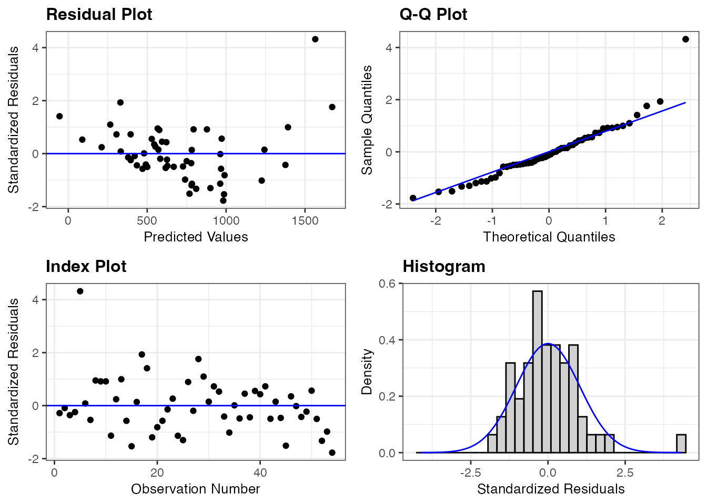
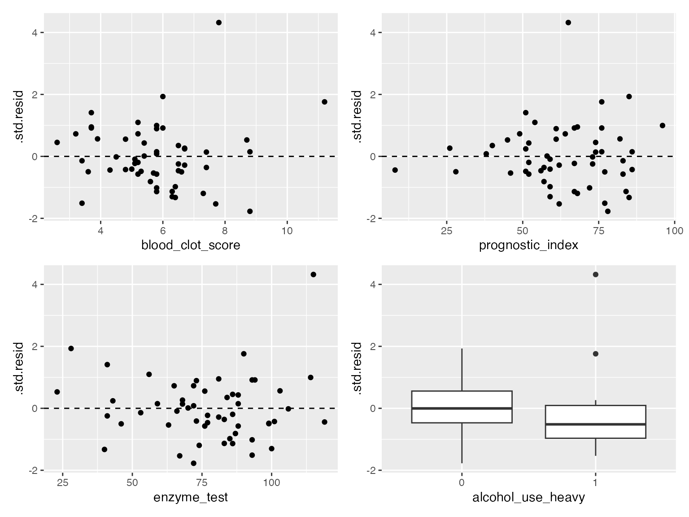
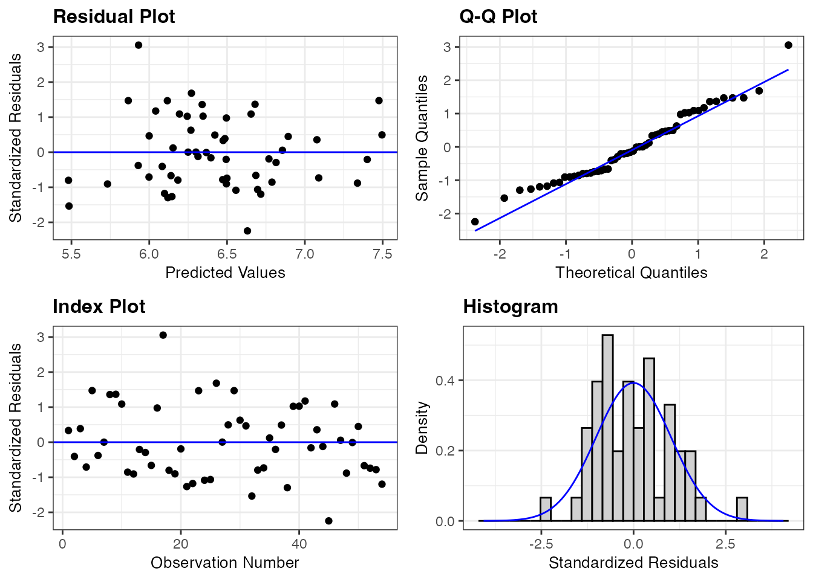
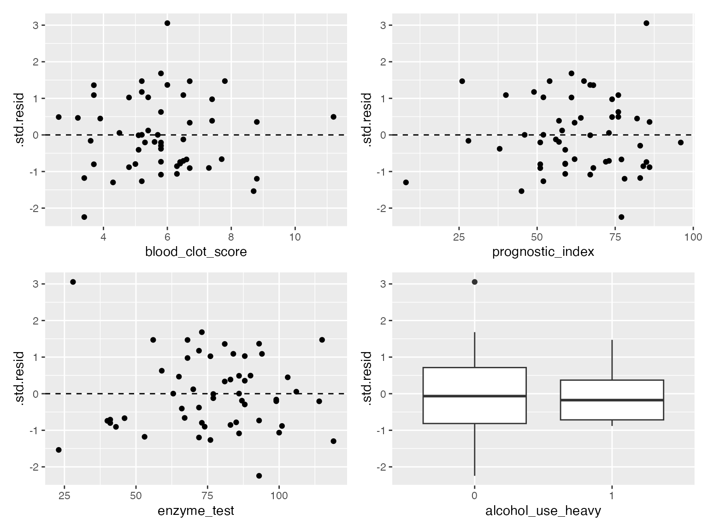
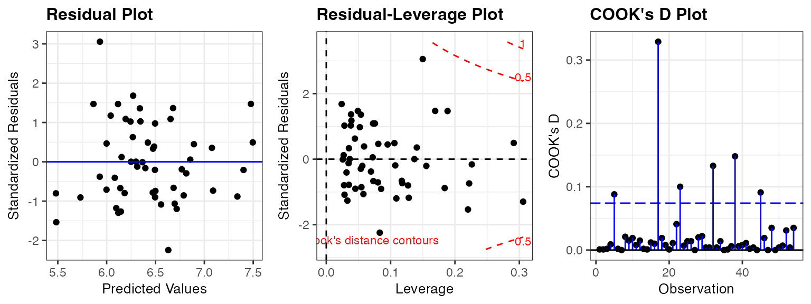

library(ggformula)
library(broom)
library(ggResidpanel)
library(patchwork)
library(dplyr)13: Diagnostic plots for MLR
Stat 230 - Spring 2026
Data and model
A hospital surgical unit was interested in predicting the survival in patients undergoing a particular type of liver operation. A random selection of 54 patients was selected for analysis. For each patient, the following information was extracted from the pre-operation evaluation and used by the research team to predict survival time (in days):
blood_clot_score: a score based on blood clotting testsprognostic_index: a prognostic index based on various health factorsenzyme_test: a score based on liver enzyme testsalcohol_use_heavy: an indicator variable for heavy alcohol use (1 = heavy use, 0 = not heavy use)
This model is fit using the below code:
surgical_data <- read.csv(here::here("data/surgical_example_data.csv"))
# surgical_data <- read.csv("https://aluby.github.io/stat230/data/surgical_example_data.csv")
surgical_lm <- lm(survival_time ~ blood_clot_score + prognostic_index + enzyme_test + alcohol_use_heavy, data = surgical_data)MLR Conditions
Checking conditions
resid_panel(surgical_lm, type = "standardized")
Q1: Use the augmented dataset below to make scatterplots of the standardized residuals against (1) blood_clot_score, (2) prognostic_index, (3) enzyme_test, (4) alcohol_use_heavy
surgical_aug <- augment(surgical_lm)
p1 <- gf_point(.std.resid ~ blood_clot_score, data = surgical_aug) |>
gf_hline(yintercept = 0, linetype = 2)
p2 <- gf_point(.std.resid ~ prognostic_index, data = surgical_aug) |>
gf_hline(yintercept = 0, linetype = 2)
p3 <- gf_point(.std.resid ~ enzyme_test, data = surgical_aug) |>
gf_hline(yintercept = 0, linetype = 2)
p4 <- gf_boxplot(.std.resid ~ factor(alcohol_use_heavy), data = surgical_aug) |>
gf_labs(x = "alcohol_use_heavy")
(p1 | p2) / (p3 | p4)
There are no clear curved patterns against any of the predictors, so linearity looks reasonable. Each plot has one very large positive residual (about 4.3 standard deviations), the same observation each time.
Q2: Based on the residual plots, do you think the current multiple linear regression model is appropriate for this data? Why or why not?
Not entirely.
- Linearity: the plots against the predictors show no clear curve, so this condition looks fine.
- Equal variance: in the residuals vs. fitted plot the spread increases for larger fitted values (a mild “fan” shape), so the equal variance condition is questionable.
- Normality: the Q-Q plot and histogram show a long right tail, driven by one point with a standardized residual above 4.
- Independence: the index plot shows no trend over time/order (the one outlier aside).
Together, a right-skewed response (survival time) with increasing spread suggests a transformation may help.
Q3: Regardless of your answer, apply a log transformation to the response variable and refit the model using the code below. Then, create the same residual plots for the new model. Do you think the log transformation improved the model fit? Why or why not?
log_surgical_lm <- lm(log(survival_time) ~ blood_clot_score + prognostic_index + enzyme_test + alcohol_use_heavy, data = surgical_data)
resid_panel(log_surgical_lm, type = "standardized")
log_aug <- augment(log_surgical_lm)
q1 <- gf_point(.std.resid ~ blood_clot_score, data = log_aug) |>
gf_hline(yintercept = 0, linetype = 2)
q2 <- gf_point(.std.resid ~ prognostic_index, data = log_aug) |>
gf_hline(yintercept = 0, linetype = 2)
q3 <- gf_point(.std.resid ~ enzyme_test, data = log_aug) |>
gf_hline(yintercept = 0, linetype = 2)
q4 <- gf_boxplot(.std.resid ~ factor(alcohol_use_heavy), data = log_aug) |>
gf_labs(x = "alcohol_use_heavy")
(q1 | q2) / (q3 | q4)
Yes, the transformation helped. The spread of the residuals vs. fitted values is now roughly constant, the Q-Q plot is much closer to a straight line, and the histogram is closer to bell-shaped. There is still one fairly large standardized residual (about 3), which we investigate next.
MLR Influence analysis
Let’s continue working with the log-transformed model.
Q4: Use resid_panel to make plots of (a) the standardized residual vs fitted values, (b) the residual vs leverage plot, (c) cook’s distance plot. Does anything stand out?
resid_panel(log_surgical_lm, plots = c("resid", "lev", "cookd"),
type = "standardized", nrow = 1)
One point has a large standardized residual (above 3) and the largest Cook’s distance. Two other points have noticeably higher leverage than the rest (they are far from the others in predictor space but fall near the line).
Q5: The resid_interact function makes an interactive version of the plots which allow you to hover on the points to identify which point (index) they correspond to. What are the observation number (index) of any points you noticed above?
resid_interact(log_surgical_lm, plots = c("cookd", "lev"))The same information in a table (using the number of predictors \(p = 4\) and \(n = 54\)):
n <- nrow(log_aug)
p <- 4
log_aug |>
mutate(observation = row_number()) |>
filter(.hat > 2 * (p + 1) / n | abs(.std.resid) > 2 | .cooksd > 4 / n) |>
select(observation, .hat, .std.resid, .cooksd) |>
arrange(desc(.cooksd)) |>
knitr::kable(digits = 3)| observation | .hat | .std.resid | .cooksd |
|---|---|---|---|
| 17 | 0.150 | 3.055 | 0.329 |
| 38 | 0.306 | -1.297 | 0.148 |
| 32 | 0.220 | -1.536 | 0.133 |
| 23 | 0.189 | 1.469 | 0.100 |
| 45 | 0.083 | -2.244 | 0.091 |
| 5 | 0.169 | 1.472 | 0.088 |
| 52 | 0.222 | -0.741 | 0.031 |
| 28 | 0.291 | 0.494 | 0.020 |
| 42 | 0.226 | -0.160 | 0.002 |
Observation 17 stands out the most: it has the largest standardized residual (about 3.05) and the largest Cook’s distance (about 0.33). Observations 38 and 28 have the highest leverage (0.31 and 0.29), and observation 45 has a standardized residual of about \(-2.2\).
Q6: Do you think any of these observations are truly influential? Why or why not? It may be useful to look back through your notes to review the definitions of these influence measures and the suggested cutoffs. (For this model, \(n = 54\) and \(p = 4\).)
- Leverage: the cutoffs are \(2(p+1)/n =\) 0.185 and \(3(p+1)/n =\) 0.278. Observations 38 and 28 exceed the larger cutoff (and a few more exceed the smaller one), so they have potential to be influential, but their standardized residuals are small.
- Standardized residuals: only observation 17 is above 3, and observation 45 is just beyond 2.
- Cook’s distance: no observation exceeds 1; the largest is observation 17 with 0.33. It stands out relative to the others (the next largest is 0.15), but it is not large in absolute terms.
So there is no strong evidence that any single observation is truly influential. Observation 17 is the one worth a closer look.
Q7: Refit the log-transformed model without the most influential observation you identified in Q6, and compare the coefficient estimates to the original fit. Following the flowchart from today’s notes, what would you do with this case?
log_surgical_lm_17 <- lm(log(survival_time) ~ blood_clot_score + prognostic_index + enzyme_test + alcohol_use_heavy,
data = surgical_data[-17, ])
tibble(
term = names(coef(log_surgical_lm)),
`with obs 17` = coef(log_surgical_lm),
`without obs 17` = coef(log_surgical_lm_17),
`% change` = 100 * (`without obs 17` - `with obs 17`) / `with obs 17`
) |>
knitr::kable(digits = 3)| term | with obs 17 | without obs 17 | % change |
|---|---|---|---|
| (Intercept) | 3.853 | 3.775 | -2.012 |
| blood_clot_score | 0.073 | 0.076 | 3.607 |
| prognostic_index | 0.014 | 0.013 | -6.921 |
| enzyme_test | 0.015 | 0.017 | 9.341 |
| alcohol_use_heavy | 0.353 | 0.354 | 0.204 |
The coefficients change by only a few percent (the largest change is about 9% for
enzyme_test), the signs are the same, and the conclusions are unchanged. Following the flowchart: do the conclusions change when the case is deleted? No, so we proceed with the case included, and study it further (e.g., is there anything unusual about this patient?) to see if anything can be learned.
Function quick reference
| Function | Purpose |
|---|---|
augment() |
Add fitted values, residuals, leverage (.hat), standardized residuals (.std.resid), and Cook’s distance (.cooksd) to the data |
resid_panel() |
Make a panel of residual plots (use type = "standardized") |
resid_interact() |
Make interactive residual plots to identify individual observations |